01Рослинна і тваринна клітини: порівняння
Рослинна і тваринна клітини мають спільний «каркас» еукаріотичної клітини: ядро, мітохондрії, ендоплазматичний ретикулум, апарат Гольджі, цитоскелет, рибосоми. Але рослинна клітина має низку унікальних рис, пов'язаних з автотрофним способом життя і нерухомістю. Розглянемо їх ззовні всередину: від клітинної стінки до вакуолі, пластид, геному й поділу клітини.
Дві ключові особливості задають тон усьому: плазмолема рослинної клітини постійно перебуває під тиском — тургорний тиск протопласта притискає її до жорсткої стінки; і тотипотентність — диференційована рослинна клітина здатна реалізувати програму розвитку цілої рослини.

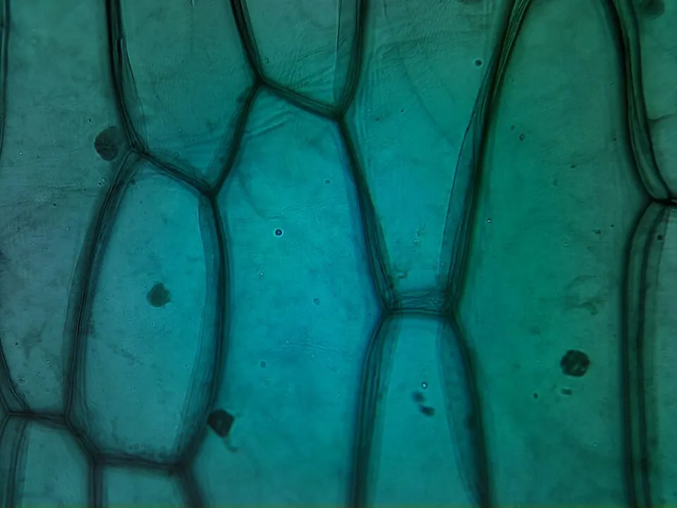

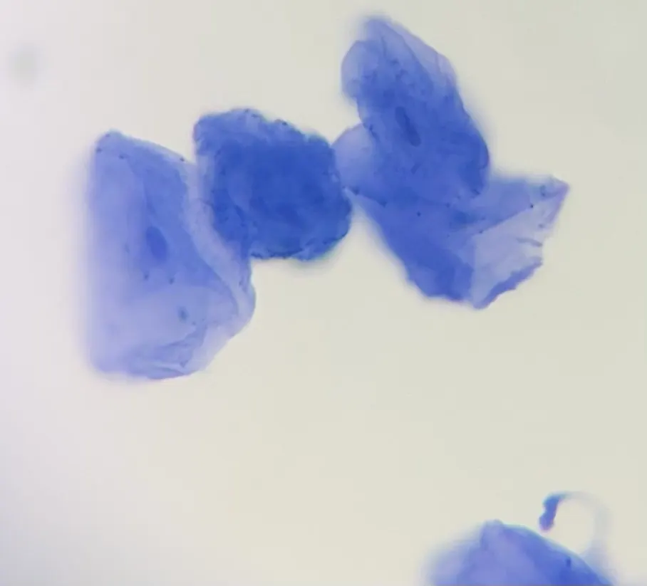

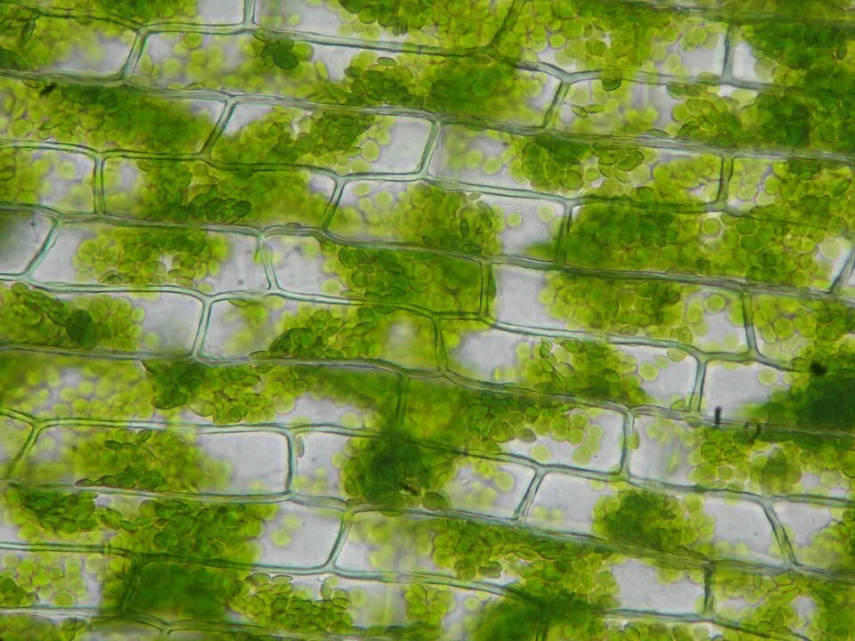

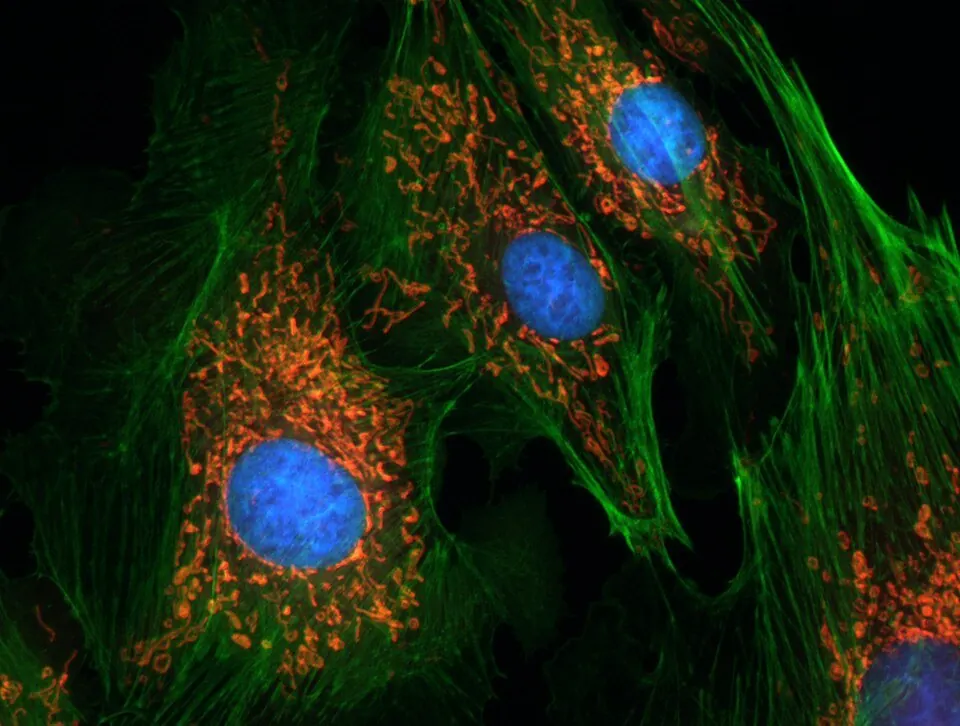
Порівняльна таблиця
| Ознака | Рослинна клітина | Тваринна клітина |
|---|---|---|
| Клітинна стінка | Є: целюлоза + зшиваючі глікани + пектини + білки; у спеціалізованих клітин — вторинна стінка з лігніном | Немає; є лише глікокалікс і позаклітинний матрикс (колаген) |
| Плазмолема | Постійно під тиском тургору, притиснута до стінки | Не відчуває тургорного тиску |
| Форма клітини | Стала, задана стінкою (часто багатогранна) | Мінлива, клітина може змінювати форму й рухатися |
| Вакуоля | Велика центральна вакуоля з тонопластом (до 80–90 % об'єму) | Дрібні вакуолі, ендосоми |
| Лізосоми | Їхню роль виконують літичні вакуолі | Є |
| Пластиди | Є: хлоропласти, амілопласти, хромопласти та ін. | Немає |
| Геноми | Три: ядерний, мітохондріальний, пластидний | Два: ядерний і мітохондріальний |
| Спосіб живлення | Автотрофний (фотосинтез) | Гетеротрофний |
| Запасний вуглевод | Крохмаль; транспортна форма — сахароза | Глікоген; транспортна форма — глюкоза |
| Центріолі | У вищих рослин немає | Є (клітинний центр) |
| Цитокінез | Клітинна пластинка, що росте від центру до країв (фрагмопласт) | Перетяжка плазмолеми ззовні всередину |
| Міжклітинні контакти | Плазмодесми з десмотубулою — єдиний симпласт | Щілинні контакти, десмосоми |
| Ріст | Розтягненням за рахунок вакуолі й розслаблення стінки | Збільшенням маси цитоплазми |
| Тотипотентність | Диференційована клітина може дати цілу рослину | Лише стовбурові клітини |
02Клітинна стінка
Довго клітинну стінку вважали жорсткою «дерев'яною в'язницею». Насправді такою стає лише вторинна стінка спеціалізованих, часто вже мертвих клітин — волокон деревини чи судин ксилеми. Первинна стінка живої молодої клітини — лабільна, динамічна структура: інакше клітина не могла б рости розтягненням і набувати складних форм (трихоми, кореневі волоски, розгалужені клітини мезофілу).
Визначає форму клітини і механічну міцність тканин та органів.
Чинить протитиск на протопласт і не дає клітині розірватися при осмотичному поглинанні води.
Порами стінки (апопластом) рухаються вода й мінеральні речовини; модифіковані стінки захищають від висихання.
Ріст розтягненням можливий лише при локальному розслабленні полімерів стінки — саме ця ділянка задає вектор росту.
Механічний бар'єр для патогенів і фітофагів; хітинази стінки руйнують гіфи грибів; калоза швидко закорковує пошкодження.
Фрагменти пектинів, які «нарізають» ферменти при атаці патогена, — еліситори: сигнал тривоги для всієї рослини.
Шари клітинної стінки
Між двома сусідніми клітинами лежить «сендвіч» зі шести шарів. Натискайте на смуги стінки або на номери під схемою — праворуч з'являться товщина, склад і кут мікрофібрил кожного шару.
Первинна стінка — «залізобетон» із полісахаридів
Первинну стінку можна уявити як залізобетон: жорсткі мікрофібрили целюлози — арматура; зшиваючі глікани (ксилоглюкани) — хомути, що з'єднують арматуру у вузлах; пектиновий гель — бетон, у якому все занурено; а експансини та ферменти — будівельники, що розслабляють хомути, коли клітина росте. Вмикайте й вимикайте шари, щоб побачити внесок кожного компонента.
- 1
Мікрофібрила целюлози — арматура
Кристалічний пучок із ≈ 18 ланцюгів β-1,4-глюкану діаметром 3–5 нм, у якому ланцюги стягнуті водневими зв'язками. Бере на себе розтяг: тургор не розриває стінку.
- 2
Зшиваючі глікани — хомути
Ксилоглюкани прилипають до поверхні мікрофібрил і з'єднують їх між собою. Жовті кільця — «гарячі точки» вузлів, де стінка здатна розслаблятися.
- 3
Пектиновий гель — бетон
Гідратований матрикс із галактуронанів, зшитих Ca²⁺. Заповнює простір між фібрилами, утримує воду, задає пористість і заряд стінки.
- 4
Експансини й ферменти — будівельники
Експансини в кислому апопласті послаблюють зв'язки глікан–целюлоза; XTH перебудовують ксилоглюкани. Так стінка «тече» й клітина росте без розриву.

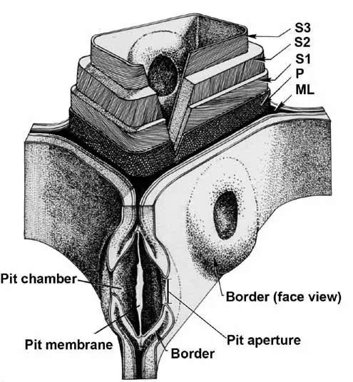

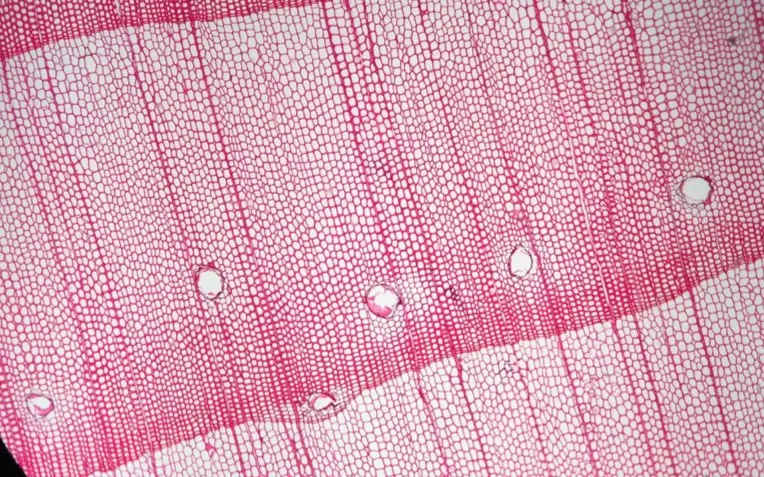

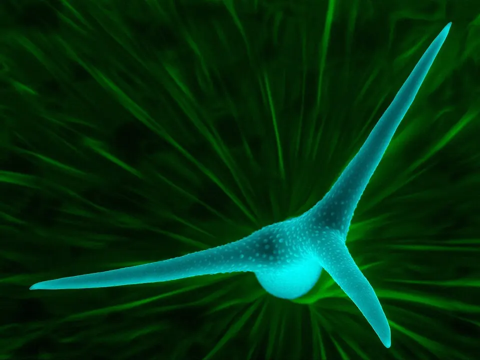

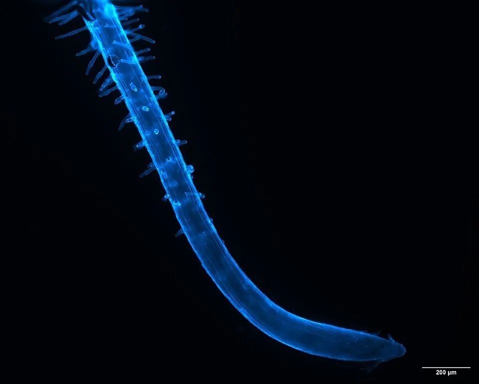
03Хімічний склад клітинної стінки
Усі полісахариди стінки побудовані з 11 моносахаридів (D-глюкоза, D-галактоза, D-маноза, D-ксилоза, L-арабіноза, L-рамноза, L-фукоза та ін.), які клітина за кілька реакцій отримує з глюкози. Окиснення групи –CH₂OH при шостому атомі вуглецю дає уронові кислоти: з глюкози — глюкуронову, з галактози — галактуронову, основний мономер пектинів.
Целюлоза, крохмаль і калоза: усе вирішує тип зв'язку
Три гомополімери D-глюкози кардинально відрізняються властивостями лише через тип глікозидного зв'язку. Перемикайте полімери, щоб побачити, як орієнтовані залишки глюкози.
Чому целюлоза надміцна? Кожен наступний залишок глюкози повернутий на 180°, тож ланцюг пласкої стрічкоподібної форми утворює максимум внутрішньо- і міжмолекулярних водневих зв'язків. Один такий зв'язок слабкий, але тисячі їх у пучку паралельних ланцюгів дають надміцну й водночас еластичну структуру: ланцюги збираються в мікрофібрили з кристалічним ядром, непроникним навіть для води, а мікрофібрили — у видимі в мікроскоп макрофібрили.
Біосинтез целюлози на плазмолемі
Жорсткі «колоди» мікрофібрил неможливо синтезувати в ЕПР чи Гольджі й перевезти везикулами, тому целюлозу (як і калозу) синтезують прямо на плазмолемі. Субстрат — сахароза, транспортна форма вуглеводів у рослин.
Зшиваючі глікани та «гарячі точки»
Застарілу назву «геміцелюлози» замінює функціональна — зшиваючі глікани: їхня роль — зв'язати мікрофібрили в мережу. Це глюкани (ксилоглюкани: глюкоза в основному ланцюзі, ксилоза, галактоза, фукоза в бічних) і ксилани (арабіноксилани, глюкуроноксилани). Синтезуються в апараті Гольджі й приєднуються до целюлози водневими зв'язками. Найміцніше зв'язування — у локальних зонах тісного контакту фібрил, «гарячих точках»: якщо послабити зв'язки саме там (спеціальні білки при закисленні стінки), фібрили ковзають одна відносно одної, і клітина росте розтягненням.
Пектини: кальцієві «замкові зони»
Пектини — ланцюги галактуронової кислоти (часом з рамнозою — рамногалактуронани). Карбоксильні групи дисоціюють до –COO⁻, і двовалентний Ca²⁺ зшиває сусідні ланцюги в міцні «замкові зони», як застібка-блискавка (на цьому ґрунтується приготування желе й мармеладу). Кількість зшивок визначає розмір пор стінки. Регулювати Ca²⁺ клітина не може — стінка сама є депо кальцію, — тому вона регулює доступність карбоксилів метилюванням: пектини виходять з Гольджі високометильованими (–COOCH₃), а пектинметилестерази в стінці знімають метильні групи, відкриваючи карбоксили для кальцію. Активність ферментів залежить від pH, який підтримують H⁺-ATPази плазмолеми.
Функції пектинів: регуляція розміру пор; негативний заряд стінки (стінка працює як катіонообмінна колонка, якою K⁺ рухається до каналів плазмолеми); формування серединної пластинки при поділі; фіксація ферментів стінки; депо кальцію; сигнальна функція та ріст розтягненням (мутанти арабідопсису за генами синтезу пектинів — карлики).
Білки клітинної стінки
Білки стінки сильно глікозильовані: вуглеводна «мітла» часто більша за поліпептид. Структурні — екстенсини, арабіногалактанові білки (багаті на гідроксипролін, гліцин, серин); ферменти перебудови — пектинметилестерази, пектинази, глікозидази; окисні — пероксидази й лаказа (зшивання фенолів, полімеризація лігніну); захисні — хітинази, глюканази.
Підсумок: целюлоза + зшиваючі глікани + пектини + білки — чотири обов'язкові компоненти будь-якої первинної клітинної стінки.

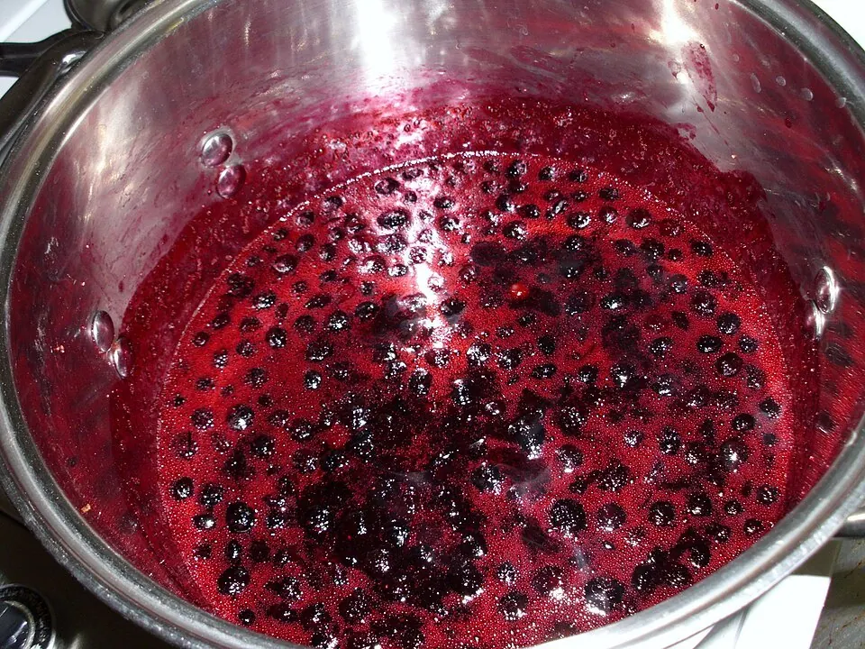

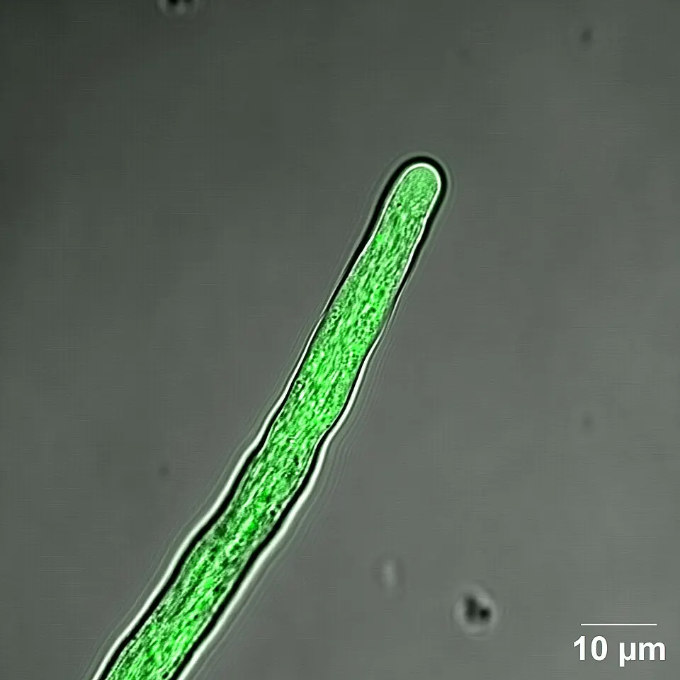

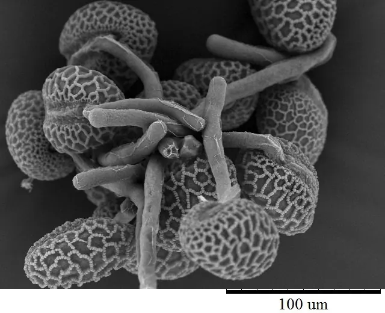
04Лігнін, суберин, кутин і воски
Вторинна стінка або бар'єрні покриви утворюються двома шляхами: інкрустація — речовина вбудовується всередину каркаса стінки (лігнін); адкрустація — гідрофобні речовини відкладаються шарами на поверхні (кутин, воски, суберин).
Тривимірна ароматична гідрофобна мережа: витісняє воду й надає стінці твердості та міцності на стиск — саме лігніфіковані стінки утворюють деревину. Мономери — три монолігноли: п-кумаровий (без метоксильних груп), конифериловий (одна –OCH₃) і синаповий (дві –OCH₃) спирти. Пероксидази й лаказа в стінці запускають вільнорадикальну полімеризацію за будь-якими позиціями — «полімер-хаос» без точної формули.
Гетерополімер з ароматичних фрагментів і довгих аліфатичних ланцюгів (оксикислот, двоосновних кислот, жирних спиртів). Просочує стінки корку (фелеми) — клітини стають непроникними для води й газів і відмирають — та радіальні стінки ендодерми кореня, утворюючи пояски Каспарі.
Полімер кутин і ефіри жирних кислот і спиртів (воски) на зовнішній поверхні епідермісу листків, молодих стебел, плодів (сизий наліт на сливі). Роблять поверхню водовідштовхувальною, захищають від кутикулярної транспірації і змочування.

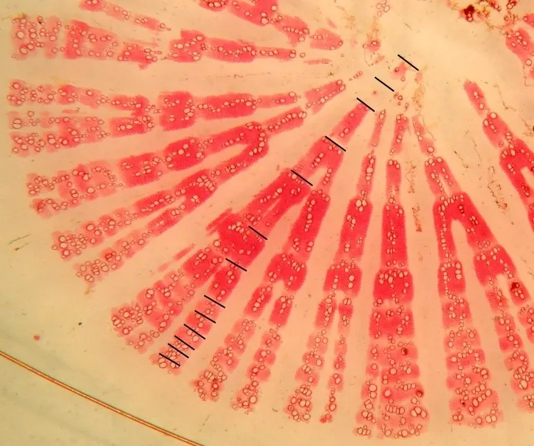

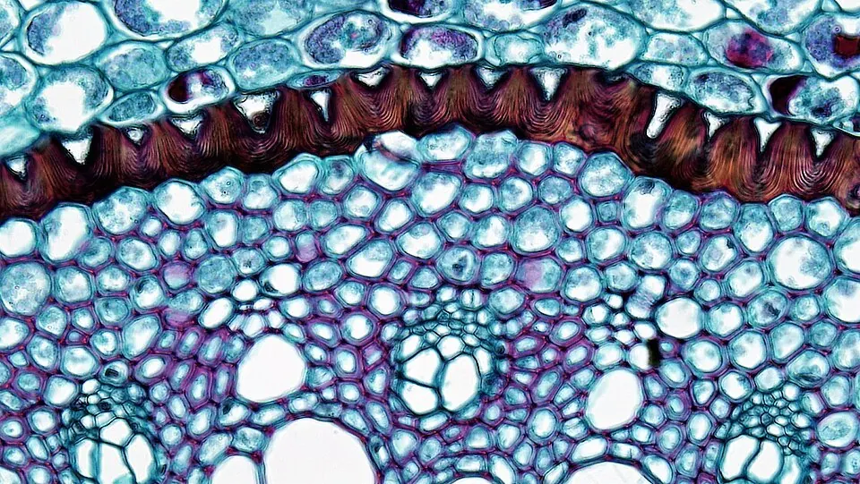

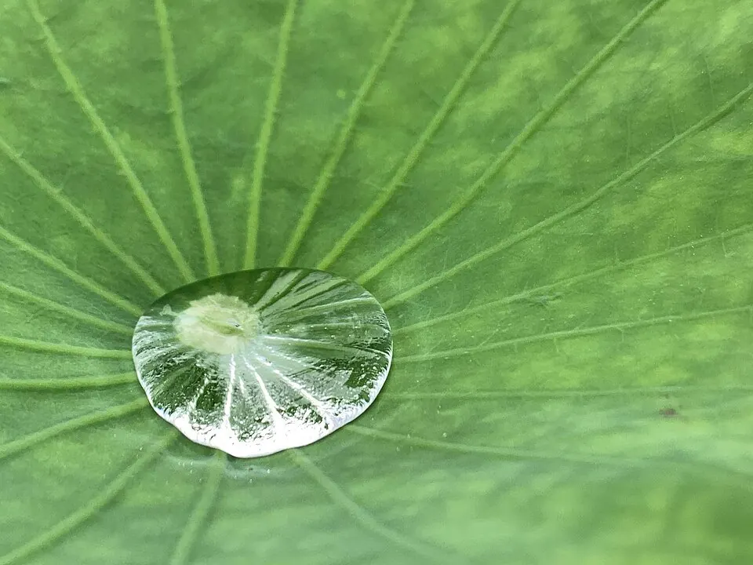
05Плазмодесми, симпласт, апопласт, протопласт
Плазмодесми — цитоплазматичні канали крізь клітинну стінку. Канал вистелений плазмолемою, що неперервно переходить з клітини в клітину, а всередині проходить десмотубула — трубочка ЕПР, що з'єднує ендоплазматичні ретикулуми сусідніх клітин. Так утворюється симпласт — єдиний цитоплазматичний простір рослини, яким вода й речовини рухаються від кінчика кореня до мезофілу листка, не перетинаючи плазмолему. Апопласт — єдиний позаклітинний простір клітинних стінок, міжклітинників і порожнин мертвих судин ксилеми.
Плазмодесма зблизька
Пояски Каспарі зблизька
Важливий виняток: у зрілих замикаючих клітинах продихів плазмодесм немає. Продих відкривається й закривається швидкою зміною тургору в замикаючих клітинах; з плазмодесмами вода просто витікала б у сусідні клітини епідермісу. Захист від вірусів: віруси поширюються рослиною плазмодесмами, тож у відповідь на інфекцію клітина синтезує біля шийки плазмодесм калозу (β-1,3-глюкан) і закриває канали.
Протопласт — увесь вміст клітини з плазмолемою, але без стінки. У природі рослинні клітини (крім деяких стадій гамет) завжди мають стінку, але протопласти отримують у лабораторії: шматочок тканини обробляють целюлазою (і пектиназою) в осмотично врівноваженому буфері. Клітини стають ідеально круглими кульками; на поживному середовищі протопласт знову синтезує стінку, ділиться і може дати нову рослину — основа біотехнології.

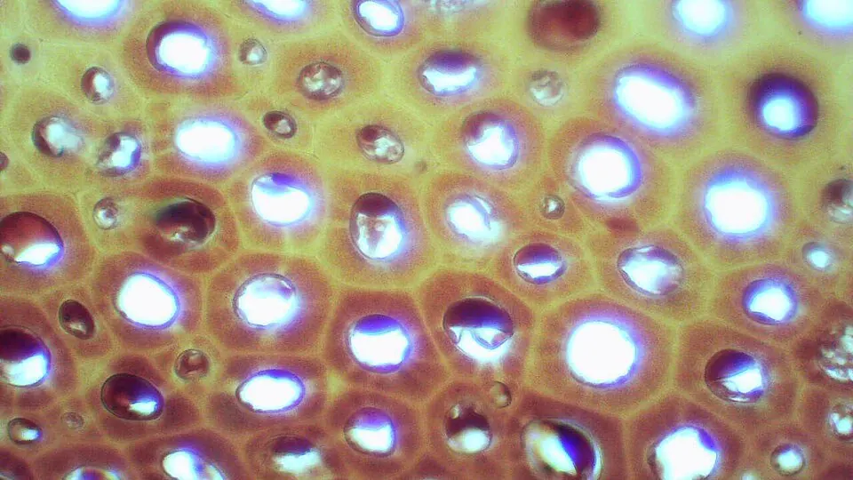

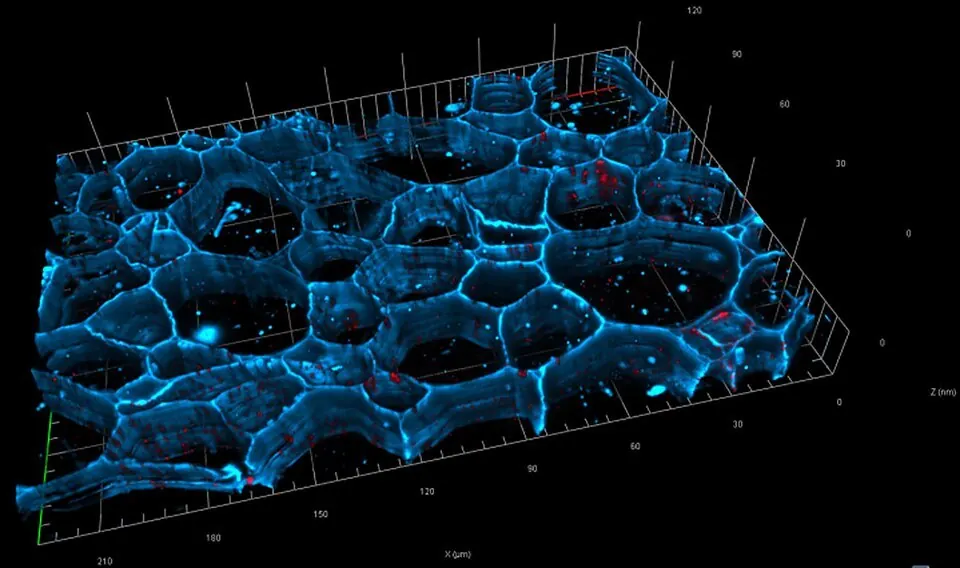

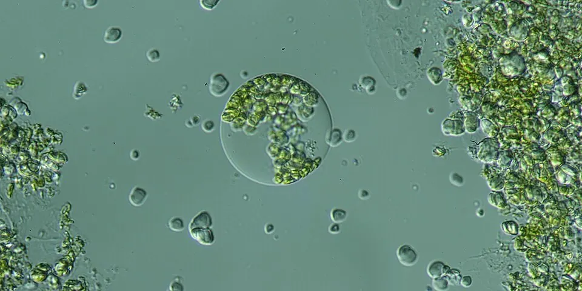

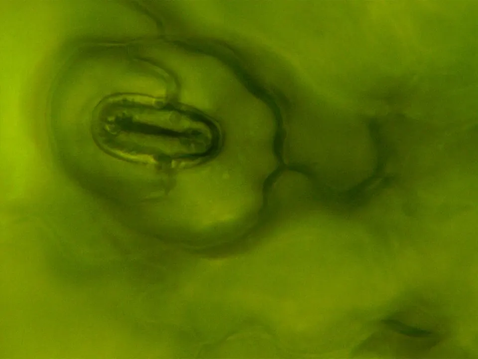
06Центральна вакуоля і тонопласт
Велика центральна вакуоля (до 80–90 % об'єму зрілої клітини) — енергетично й матеріально найдешевший спосіб збільшити клітину. Цитоплазма «дорога»: білки, рибосоми, мембрани, цитоскелет потребують багато енергії, азоту, фосфору й вуглецю. Основа ж вакуолярного соку — вода: накачуючи її у вакуолю, рослина отримує велику клітину з великою поверхнею за мінімуму ресурсів.
Тонопласт — мембрана вакуолі. Оскільки запасні білки й протеолітичні ферменти не можна зберігати разом, розрізняють запасаючі вакуолі (білки, цукри, амінокислоти, органічні кислоти, іони, ксенобіотики) і літичні — кислі, з гідролазами, аналог лізосом.
Тургор і плазмоліз
Змінюйте концентрацію зовнішнього розчину: у гіпертонічному розчині вода виходить з вакуолі, протопласт відстає від стінки — плазмоліз; у гіпотонічному клітина набирає воду, але стінка не дає їй розірватися — тургор.
Накопичення поживних речовин і рециклізація клітинних компонентів.
Алкалоїди, таніни, ціаногенні глікозиди ізольовані тонопластом; при пережовуванні ферменти контактують із субстратами — виділяється, наприклад, синильна кислота.
Водорозчинні антоціани (колір залежить від pH) і беталаїни забарвлюють квітки, плоди й листя. Жиророзчинні каротиноїди — завжди в пластидах.
Важкі метали, гербіциди, токсичні продукти обміну зв'язуються фітохелатинами й глутатіоном і закачуються у вакуолю ATP-залежними переносниками.
Буферний резервуар для H⁺ і Ca²⁺, що підтримує сталий pH цитозолю.
Закачування іонів і осмолітів через тонопласт зумовлює приплив води, що підтримує тургор і пружність тканин.

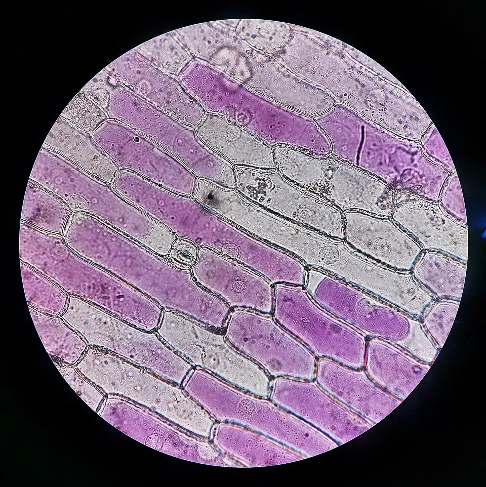

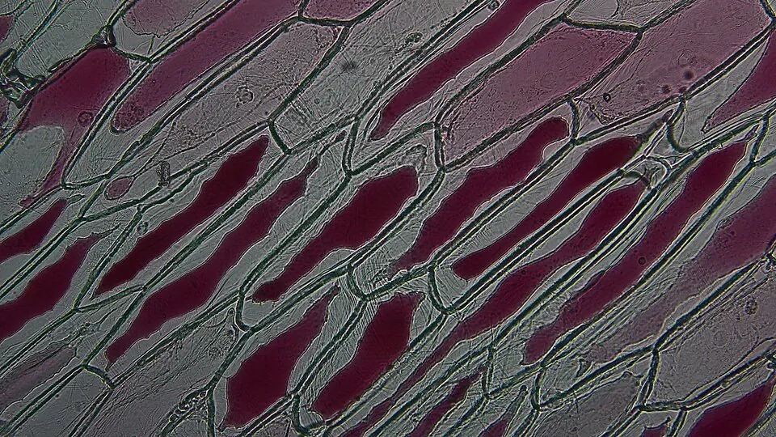

07Пластиди і три геноми
Пластиди — двомембранні напівавтономні органели, що є лише в рослинній клітині. Хлоропласт має три мембранні системи: зовнішню і внутрішню мембрани оболонки та систему тилакоїдів (грани й ламели), яка ніде не зливається з оболонкою. Відповідно в хлоропласті два неперервні простори: строма (матрикс) і люмен — спільна внутрішня порожнина всіх тилакоїдів. Пластиди мають власну кільцеву ДНК (пластом) і прокаріотичні 70S-рибосоми.
Усі типи пластид, навіть безбарвні, містять власну ДНК і здатні перетворюватися одна на одну під контролем ядра. Натисніть на пластиду.
Пластида — «фабрика гарячих і шкідливих виробництв»
- Фотосинтез: ФС II виділяє O₂; тут працюють найсильніший біологічний окисник (P680⁺, що відриває електрон від води) і найсильніший відновник (ФС I). Висока концентрація O₂ поруч із ними — постійна загроза активних форм кисню.
- Синтез жирних кислот, багатьох амінокислот, пуринових і піримідинових нуклеотидів.
- Немевалонатний (MEP) шлях синтезу ізопреноїдів, успадкований від прокаріотичного предка; у цитозолі паралельно працює мевалонатний шлях.
- Асиміляція азоту й сірки: нітрит відновлюється до NH₄⁺, сульфат — до сульфіду й одразу включаються в органічні сполуки.
Три геноми рослинної клітини
Тваринна клітина має два геноми (ядерний і мітохондріальний), рослинна — три.
Лінійні хромосоми. Більшість генів предкових ціанобактерії й α-протеобактерії перенесено сюди під час ендосимбіогенезу. Кодує регуляторні субодиниці комплексів органел.
Кільцевий, величезний за розміром, але «безладний»: решта об'єму — некодуючі повтори, інтрони, вставки хлоропластної та ядерної ДНК.
Кільцевий, компактний, щільно упакований; транскрибують два типи РНК-полімераз — бактеріального і фагового типу.
Як геноми працюють разом. Великі комплекси органел (Рубіско, фотосистеми, дихальний ланцюг) збираються з субодиниць подвійного походження: ядро кодує регуляторні, органела — каталітичні «робочі конячки». Ядро керує органелами (антероградний контроль), а пластиди й мітохондрії сигналізують ядру про свій стан (ретроградний сигналінг). Спільна риса мітохондрій і пластид рослин — редагування РНК: ферменти замінюють у мРНК цитидин на уридин, створюючи старт- чи стоп-кодони або змінюючи амінокислоту.

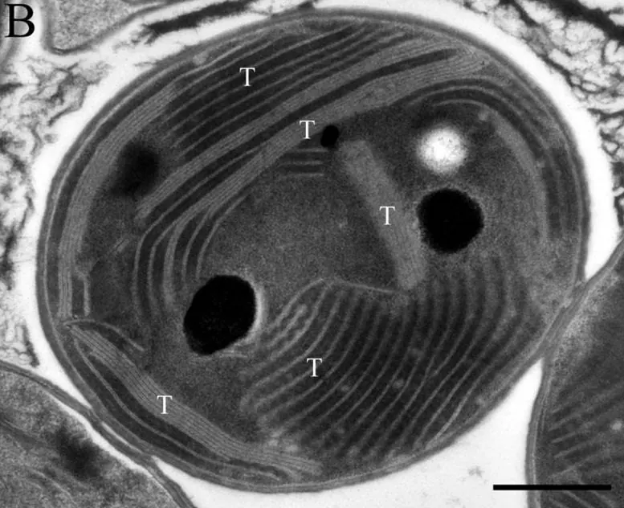

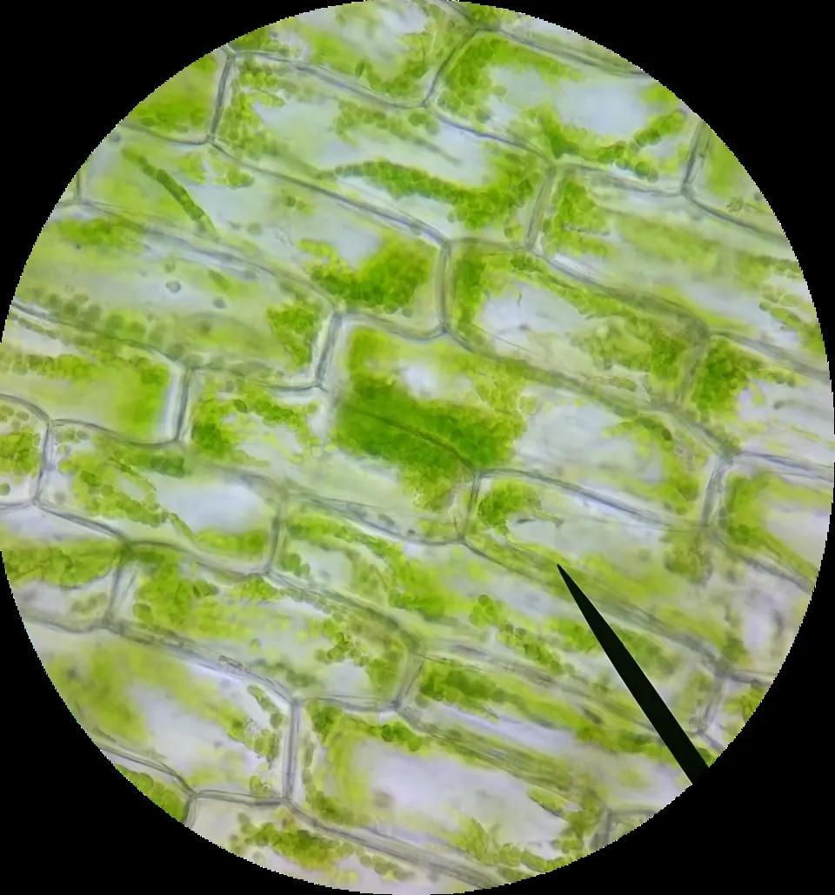

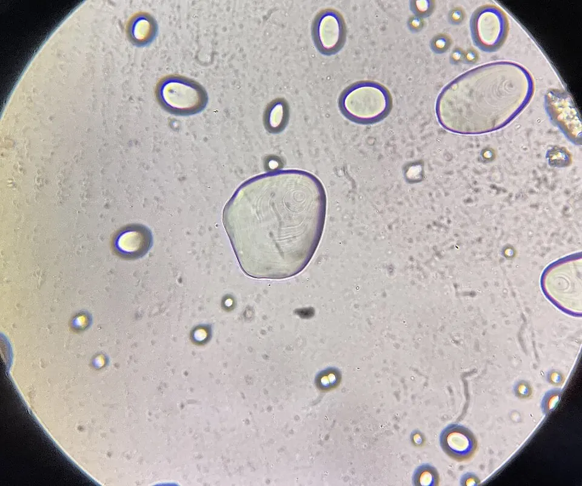

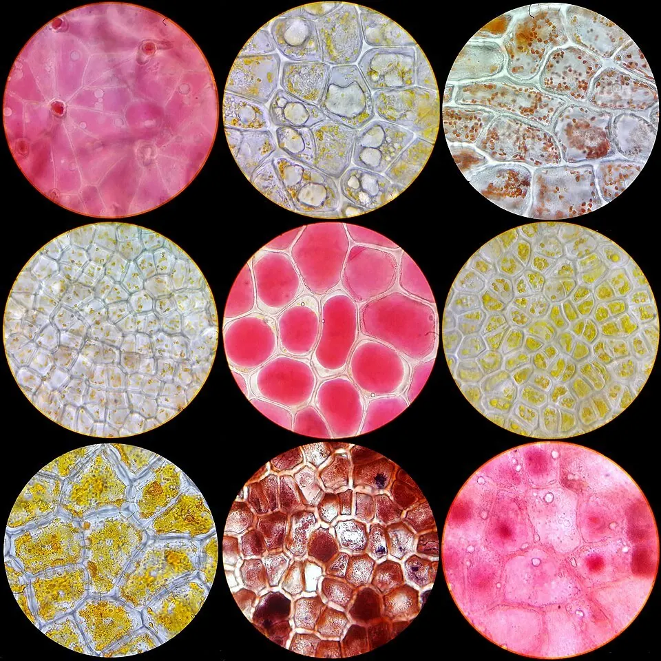

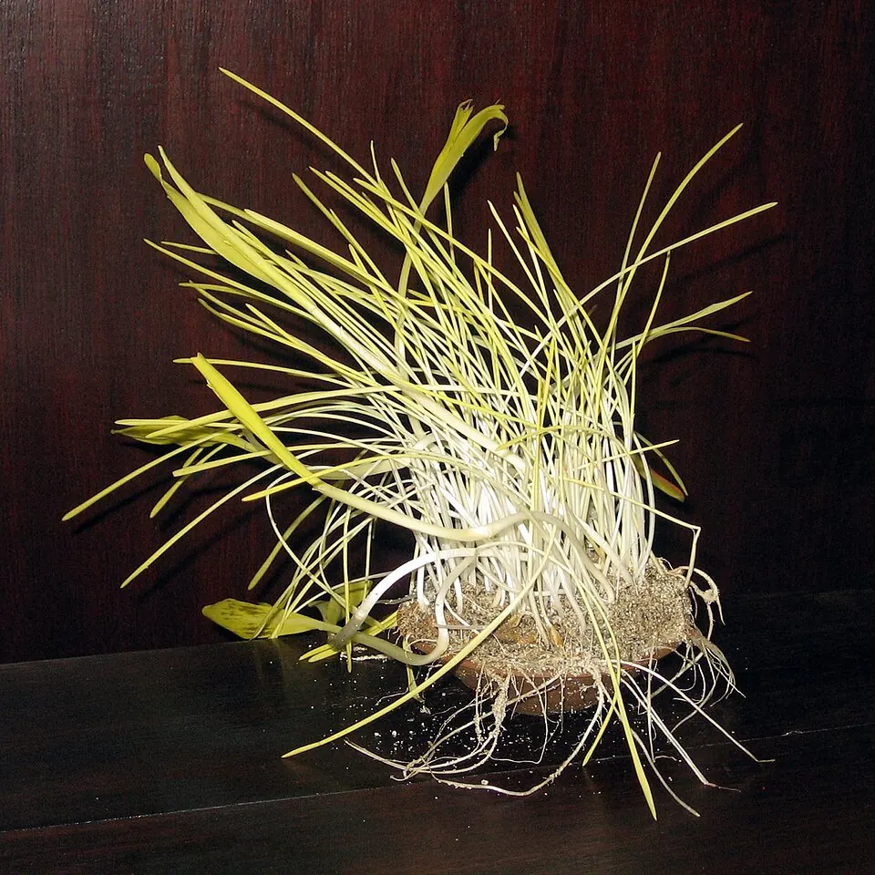

08Поділ рослинної клітини
Каріокінез у рослин (розпад ядерної оболонки, конденсація хромосом, метафазна пластинка, розходження хроматид) загалом такий самий, як у тварин. Принципових відмінностей дві:
- Немає центріолей. Веретено поділу вищих рослин організують дифузні центри організації мікротрубочок.
- Фрагмопласт і клітинна пластинка замість перетяжки. Жорстка стінка не дає рослинній клітині поділитися перетяжкою ззовні всередину. У телофазі між дочірніми ядрами утворюється фрагмопласт — система мікротрубочок і актинових філаментів. Нею, як по рейках, везикули Гольджі з метильованими пектинами й зшиваючими гліканами рухаються до екватора, зливаються в дископодібну клітинну пластинку (майбутню серединну пластинку), а їхні мембрани стають новою плазмолемою. Пластинка росте від центру до країв, доки не зіллється зі стінкою материнської клітини.
Тваринна клітина: перетяжка
Рослинна клітина: клітинна пластинка

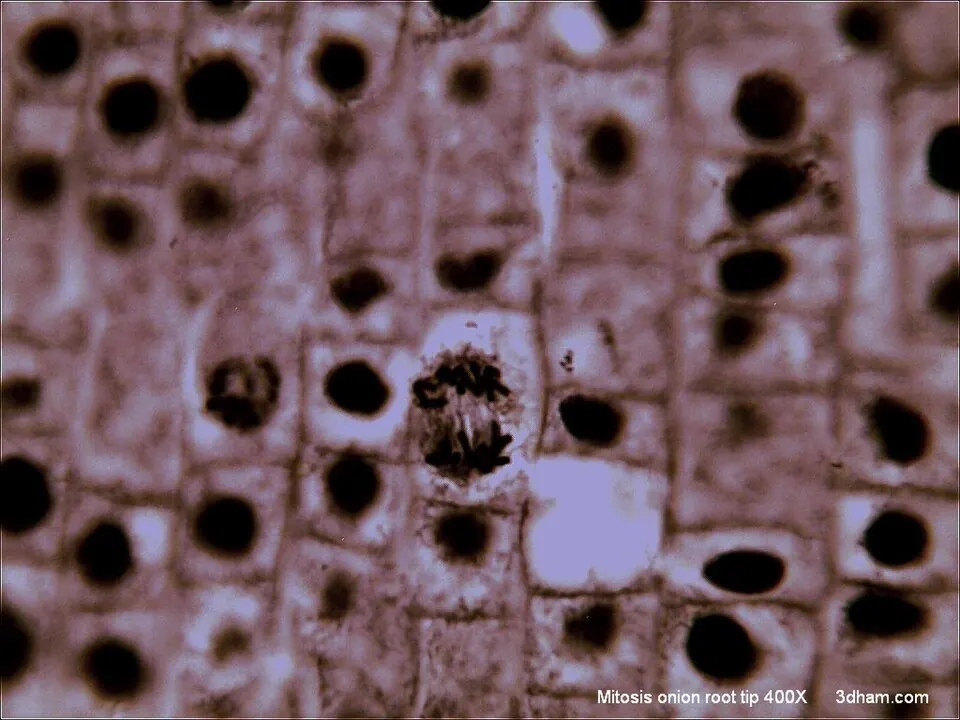

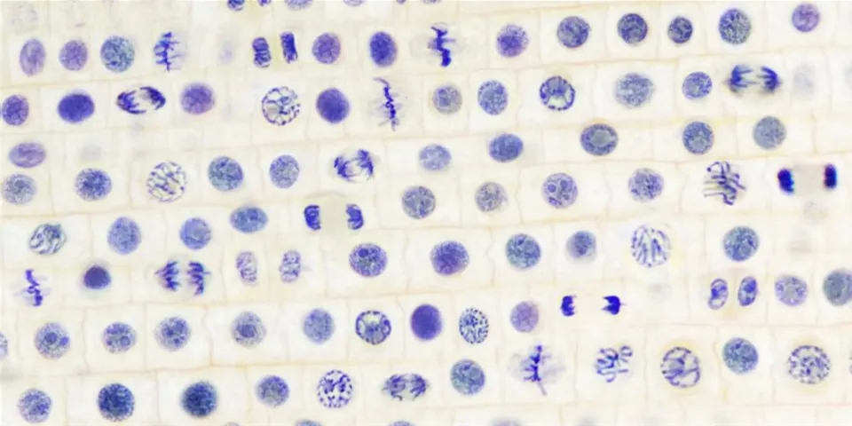

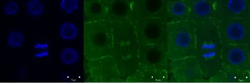

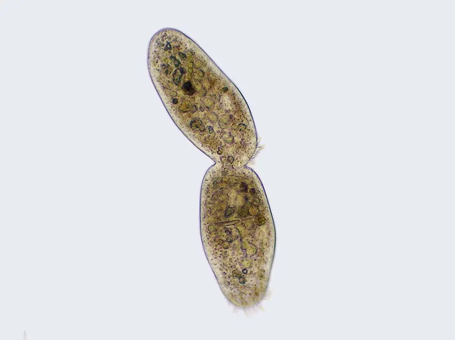
09Шість «пластів» фізіології рослин
Єдиний цитоплазматичний простір клітин, об'єднаних плазмодесмами.
Єдиний простір клітинних стінок і міжклітинників.
Вміст клітини разом із плазмолемою, без клітинної стінки.
Мембрана центральної вакуолі.
Двомембранні напівавтономні органели: пропластида, хлоропласт, лейкопласт, амілопласт, хромопласт, етіопласт, геронтопласт.
Мікротрубочкова структура, що формує клітинну пластинку під час поділу рослинної клітини.
10Контрольні питання
Назвіть основні відмінності рослинної клітини від тваринної.
Які чотири обов'язкові компоненти первинної клітинної стінки?
Чим целюлоза відрізняється від крохмалю, якщо обидва — полімери глюкози?
Чому целюлоза синтезується на плазмолемі, а не в апараті Гольджі?
Як клітина регулює розмір пор клітинної стінки?
Чим інкрустація відрізняється від адкрустації?
Яку роль відіграють пояски Каспарі?
Чому в замикаючих клітинах продихів немає плазмодесм?
Навіщо рослинній клітині велика центральна вакуоля?
Назвіть типи пластид і їхні взаємоперетворення.
Чим цитокінез рослинної клітини відрізняється від тваринної?
11Література
- Константинова С. В. Фізіологія і біохімія рослин. Лекція 2. Відмінності рослинної і тваринної клітин (відеолекція, проєкт Teach-in, МДУ).
- Taiz L., Zeiger E., Møller I. M., Murphy A. Plant Physiology and Development. — 6th ed. — Sinauer, 2015. — Ch. 1, 14 (Cell walls).
- Cosgrove D. J. Growth of the plant cell wall // Nature Reviews Molecular Cell Biology. — 2005. — Vol. 6. — P. 850–861.
- Cosgrove D. J. Re-constructing our models of cellulose and primary cell wall assembly // Current Opinion in Plant Biology. — 2014. — Vol. 22. — P. 122–131.
- Jarvis K. P. Plastid development and interconversion // Annual Review of Plant Biology. — 2013. — Vol. 64. — P. 503–532.
- Smertenko A. et al. Phragmoplast microtubule dynamics — a game of zones // Journal of Cell Science. — 2018. — Vol. 131. — jcs203331.
- Макрушин М. М., Макрушина Є. М., Петерсон Н. В., Мельников М. М. Фізіологія рослин : підручник. — Вінниця : Нова Книга, 2006.